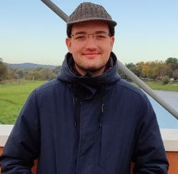

About Me

Danylo Artysh
Aarhus, Denmark | 360990@via.dk
Background
I study Software Engineering at VIA University College in Aarhus. Before that I studied Computer Engineering at Lviv Polytechnic in Ukraine for three years, until the war forced me to pause my studies. There I worked with embedded systems, computer networks and systems programming
Interests
- Software development and coding
- Robotics and DIY electronics projects
- Hiking and exploring new places
- Gaming and watching Movies and anime